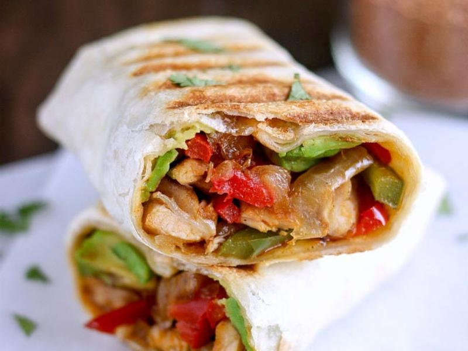

Fajita Wrap

Description
What is a good wrap?
The perfect wrap is well-seasoned and toasty. A good fajita wrap will have a variety of textures accompanied by deliciously spicy and savory falvor profile. Complete with a nice vegetable stir-fry and juicy diced chicken, it's a complete meal.
Ingredients
- Diced chicken thighs 500g
- Sweet peppers 200g
- Onions 200g
- Garlic 2 cloves
- Flour tortillas
- Fajita seasoning
- Lemon juice 2tbsp
- Soy sauce 1tbsp
- Salt and pepper to taste
Steps
- In a bowl combine the soy sauce, lemon juice, salt, pepper and crushed garlic.
- Add chicken to the bowl and mix thoroughly. Cover the bowl and set in a fridge to marinate for 30 minutes.
- Add oil to a heated pan. Then add the onions and peppers and fry for 3 minutes.
- Add remaining garlic and seasoning mix to the pan along with the chicken and continue cooking for 5 minutes.
- Toast tortillas in a skillet/microwave/oven until warm.
- Place stir-fry on tortilla, assemble into a wrap and serve hot.